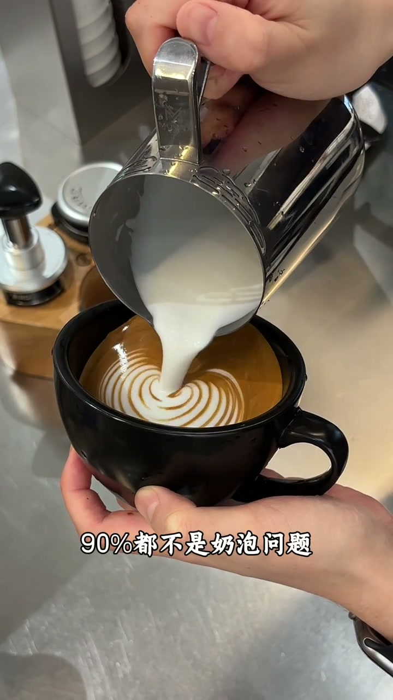
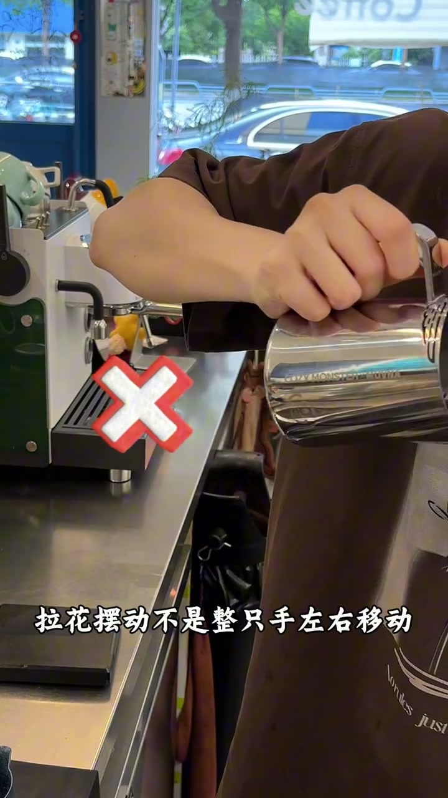
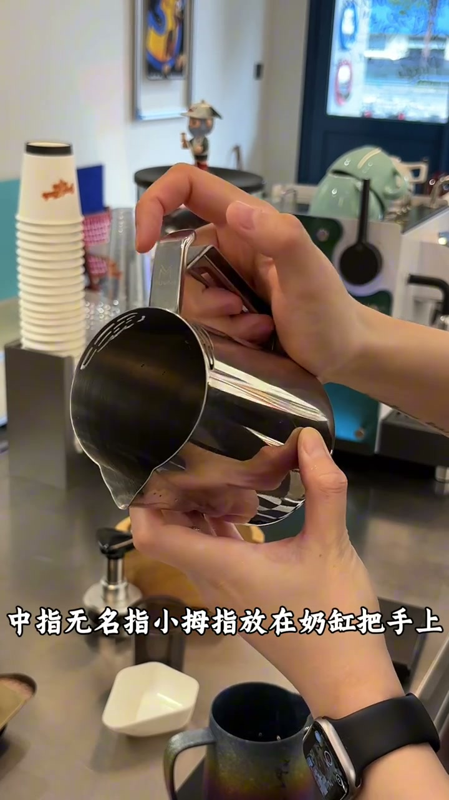
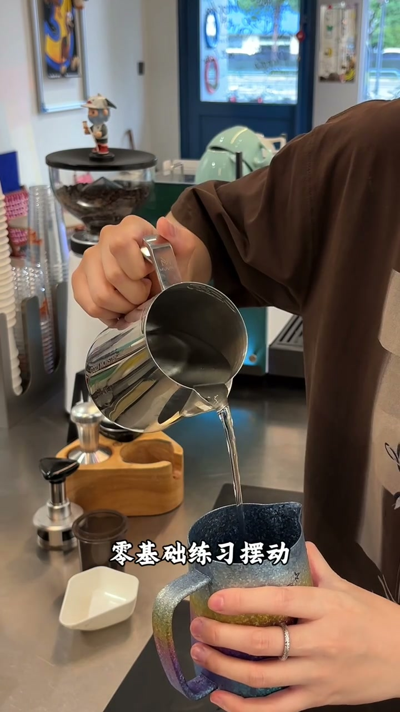
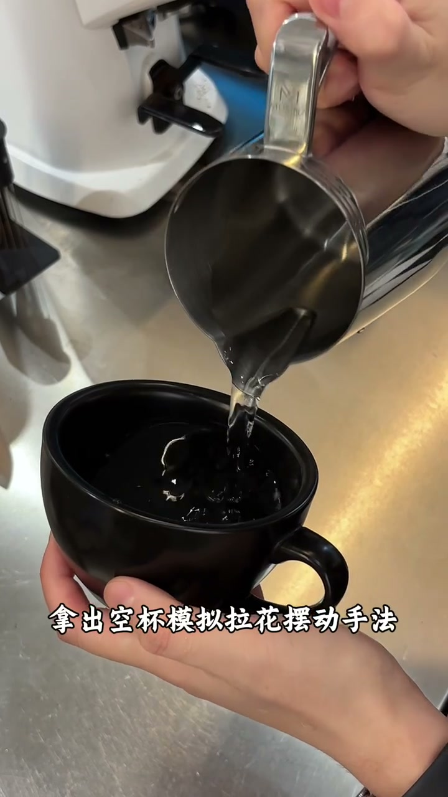
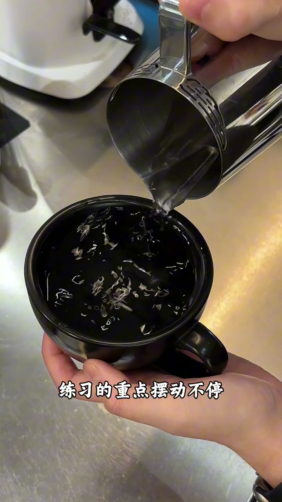
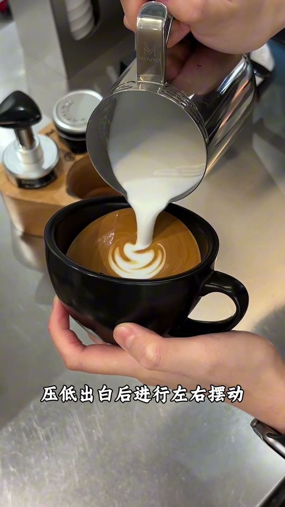
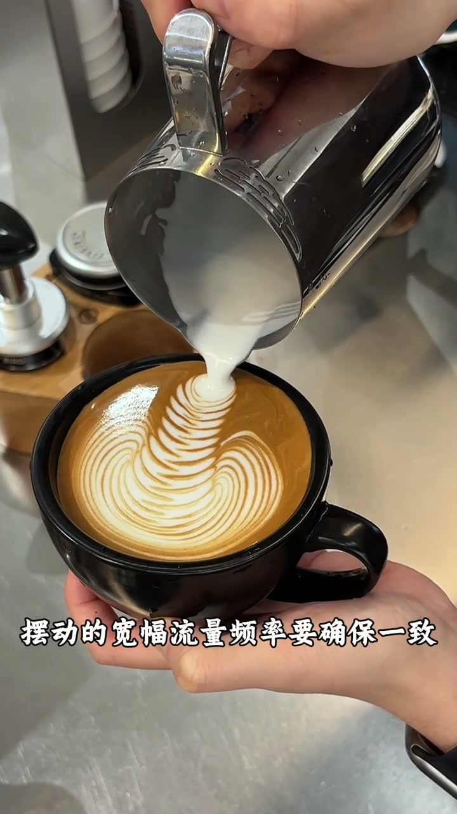

开场：90% 的翻车，其实是摆动不会
视频一开始就是近景拉花：黑色咖啡杯里已经有一圈圈奶泡纹路，不锈钢奶缸压低倾倒。字幕直接点题——很多新手拉花翻车，90% 都不是奶泡问题，是摆动不会。

接着口播列出典型翻车画面：波纹乱、宽窄不一、纹路僵硬不清晰。核心原因被说得很具体——手腕发力导致节奏乱，摆动快慢频率不一致。
口播原文：「很多新手拉花翻车90%都不是奶泡问题，是摆动不会。」
课程承诺也很直白：拆解一套从 0 到 1 的练习流程，新手照练七天，轻松拉出均匀湿滑纹路。
正确摆动不是整只手左右晃
UP 主先纠正常见误解：拉花摆动不是整只手左右引动。那样看起来像在晃，其实只是「倒奶」，水流不会稳定成 S 形。

正确说法是：手臂稳，让水流呈现 S 形。后面整段教程都在把这句话拆成可练动作。
口播原文：「正确的摆动应该是手臂稳，(手腕)晃水流呈现S形。」
转录里「云术晃」应为「手腕晃」的识别误差；结合画面是手臂固定、靠手指/手腕附近做轻摆。
中指、无名指、小拇指握住奶缸把手
画面切到握持特写：右手三指扣住奶缸把手，左手扶杯，背景里有咖啡机和纸杯。字幕与口播同步强调手指位置。

姿势要求：手臂打开，手肘与肩关节齐平；左右摆动靠后方三个手指完成。UP 主把这说成「惯性运动」——发力越轻越放松，奶的纹路越细腻。
口播原文：「靠后方三个手指进行摆动……发力越轻越放松，奶的纹路越细腻。」
零基础先从玩水开始
正式进入练习日程。第一天不碰牛奶，用水练动作：放水流呈现 S 形，每天三组、每组一分钟，全程不抖，速度均匀、幅度一致。

这一段的重点不是出图，而是把肌肉记忆从「手腕用力」改成「放松惯性摆动」。
定点摆动：只摆不退
稳定之后进入第二天：拿出空杯模拟拉花，做定点摆动——只摆动、不后退。要求观察水面波纹，练出整齐平行、宽窄一致的纹路，并改掉忽大忽小、左右偏移的坏习惯。

口播原文：「第一位定点摆动，只摆不退，观察水面的波纹。」
摆动不停，后退不加速
第三天把两个动作合在一起：左右摆动的同时加后退。练习重点被压缩成一句话——摆动不停，后退不加速，全程节奏统一。前期仍可继续用水反复练。

UP 主认为坚持练熟后，基础拉花就能直接成型。
用牛奶和浓缩咖啡拉出树叶
掌握摆动后进入实战：压低出奶口左右摆动，边摆边慢慢回提，流量与幅度不要刻意发力。同样在摆动过程中加上后退，宽幅、流量、频率保持一致，最后得到树叶拉花。


口播原文：「摆动的宽幅、流量、频率要确保一致，这样你就得到了一杯好看的树叶拉花。」
看完这条时间线，你带走什么
整支视频按「诊断问题 → 纠正手法 → 水练三天 → 牛奶实战」推进。它没有讲复杂花式，只盯一件事：把摆动从手腕用力，换成三指惯性、节奏统一。最后一句反问「你也学会了吗」，把练习责任交回给观众。